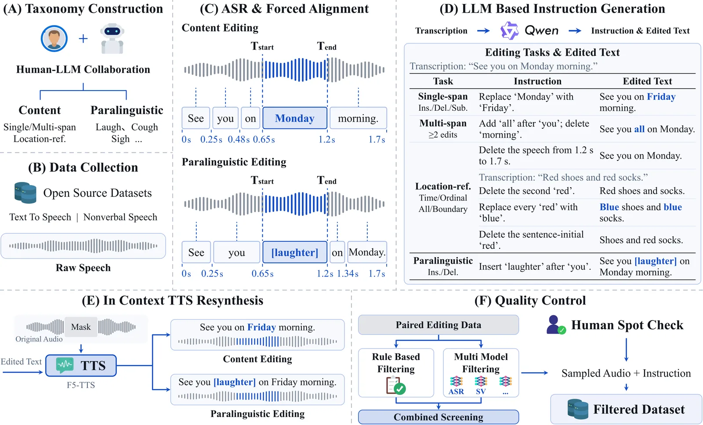
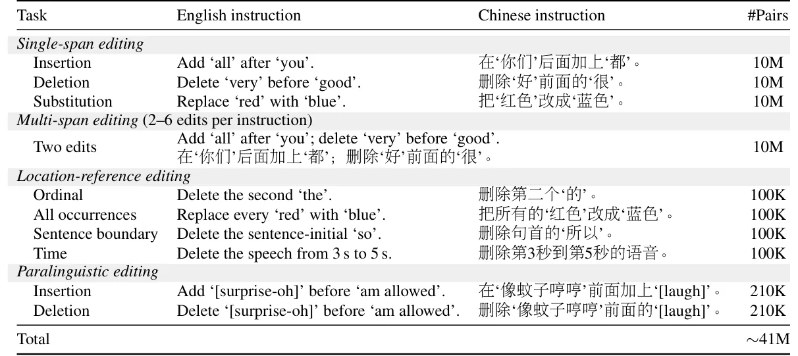
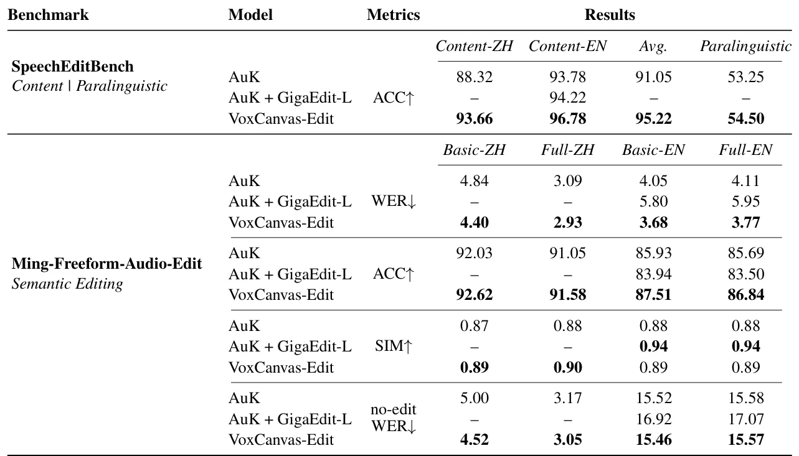
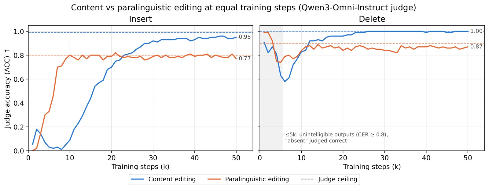

O gargalo de dados na edição de fala por instrução
A edição de fala (speech editing) visa modificar trechos específicos de um áudio mantendo a identidade da voz, a prosódia e o ambiente acústico das regiões não editadas. Diferente da síntese de fala (TTS), que gera áudio do zero, a edição permite correções pós-produção, dublagem e ajustes finos sem regenerar todo o material. Recentemente, surgiram duas abordagens principais: métodos baseados em preenchimento de lacunas (infilling) e métodos baseados em instrução (instruction-based). Os primeiros mascaram trechos aleatórios do áudio e tentam prever o conteúdo mascarado usando o contexto circundante. Embora não exijam dados de edição pareados para treinamento, eles dependem de ferramentas externas de reconhecimento automático de fala (ASR) e alinhamento forçado para identificar exatamente onde cortar e o que reescrever durante a inferência.
Os métodos baseados em instrução, por outro lado, aceitam comandos em linguagem natural (como 'troque segunda por terça') e editam o áudio sem precisar do texto editado ou dos limites temporais exatos. Isso oferece flexibilidade, permitindo combinar múltiplos tipos de edição em um único comando. No entanto, essa abordagem sofre de um problema crítico: a escassez de grandes conjuntos de dados de alta qualidade e pareados (áudio original, áudio editado e instrução). A maioria dos modelos state-of-the-art, como Step-Audio-EditX e AuK, treina com dados proprietários internos, impossibilitando a reprodução e comparação justa entre pesquisas.
Neste contexto, o paper apresenta o VoxCanvas-41M, um dataset bilíngue massivo contendo aproximadamente 41 milhões de pares de edição de fala. O objetivo não é apenas fornecer dados, mas também investigar a dinâmica de aprendizado desses modelos. Os autores buscam responder perguntas fundamentais: como os modelos adquirem capacidades de edição? Qual a relação entre geração de fala e edição? Como diferentes operações (inserção, deleção, substituição) convergem durante o treinamento? A resposta a essas questões é crucial para entender se a edição é apenas uma especialização da TTS ou uma habilidade distinta que emerge sob certas condições de dados.

Construção do VoxCanvas-41M: Um pipeline escalável
A construção de datasets de edição de fala é inerentemente cara e complexa. Anotação manual é inviável para escalas de milhões de amostras, enquanto pipelines baseados apenas em regras frequentemente produzem artefatos ou instruções inconsistentes. Para superar isso, os autores propõem um pipeline híbrido que combina automação em larga escala com validação humana e lógica de LLMs (Large Language Models). O processo inicia com a coleta de áudio de fontes open-source e a geração de transcrições via ASR. Em seguida, utiliza-se uma colaboração entre humanos e LLMs para gerar instruções de edição naturais e textos editados correspondentes.
O pipeline cobre duas categorias principais de edição: edição de conteúdo e edição paralinguística. A edição de conteúdo inclui substituição de palavras, inserção e deleção de spans únicos ou múltiplos, e edição baseada em referência de localização (ex: 'delete o segundo "red"'). A edição paralinguística lida com eventos não verbais, como risos, suspiros e toses, cobrindo 39 classes diferentes. Os autores enfatizam que, ao contrário de datasets anteriores que apenas cortam e colam áudios existentes, o VoxCanvas-41M gera pares onde a instrução é natural e o áudio editado é sintetizado ou manipulado com precisão, garantindo consistência acústica.
Um componente crítico do pipeline é o controle de qualidade. Após a geração inicial dos pares, passa-se por uma etapa de filtragem multi-modelo e verificação humana pontual. Isso é necessário porque erros no texto editado ou na instrução podem levar a falhas na edição. O uso de TTS (Text-to-Speech) para resintetizar partes editadas permite criar pares onde o áudio original e o editado são alinhar perfeitamente, algo difícil de alcançar apenas com manipulação direta de ondas sonoras. Essa abordagem híbrida permite a escala de 41 milhões de pares, um salto significativo em relação aos ~2.1M pares do GigaEdit-L, que é limitado a inglês e edição de conteúdo básica.

Arquitetura do modelo e treinamento
Para validar a eficácia do dataset, os autores treinam o VoxCanvas-Edit, um modelo baseado na arquitetura AuK. O AuK é um modelo generativo que utiliza um encoder congelado Qwen2.5-Omni para extrair características semânticas do áudio fonte e da instrução de edição. Essas características são combinadas com latentes de áudio codificados por um VAE (Variational Autoencoder) em um transformer de correspondência de fluxo (flow-matching transformer). O modelo prediz a velocidade do fluxo para gerar os latentes do áudio editado, que são então decodificados de volta para o domínio do áudio.
O treinamento do VoxCanvas-Edit foi realizado com LoRA (Low-Rank Adaptation), uma técnica de fine-tuning eficiente que atualiza apenas uma pequena fração dos parâmetros do modelo (cerca de 20 milhões de parâmetros treináveis, contra centenas de milhões no backbone). Isso demonstra que é possível adaptar modelos de geração de fala para edição de alta qualidade sem o custo computacional massivo de treinar do zero. O modelo foi treinado por uma epoch completa com um batch size total de 2.24M frames, utilizando o otimizador AdamW. A escolha de usar LoRA é estratégica, pois permite a experimentação rápida com diferentes estratégias de dados e análise de ablação, mantendo a estabilidade do conhecimento prévio do modelo base.
É importante notar que o VoxCanvas-Edit não é apenas um modelo final, mas uma ferramenta de investigação. Ao fine-tunar o AuK no VoxCanvas-41M, os autores podem isolar o efeito do dataset na performance de edição. O modelo serve como baseline para comparar contra versões fine-tuned em datasets menores ou menos diversificados, como o GigaEdit-L. Essa abordagem permite quantificar o ganho marginal trazido pela escala e pela diversidade do VoxCanvas-41M, fornecendo evidências empíricas para a necessidade de dados bilíngues e paralinguísticos na edição de fala.
Resultados: Performance em benchmarks bilíngues
A avaliação do VoxCanvas-Edit foi conduzida em dois benchmarks principais: SpeechEditBench e Ming-Freeform-Audio-Edit. O SpeechEditBench avalia a precisão da edição (ACC) em subsets de conteúdo (chinês e inglês) e paralinguístico. Os resultados mostram que o VoxCanvas-Edit supera significativamente o baseline AuK não ajustado e o AuK fine-tuned no GigaEdit-L. No subset de conteúdo em inglês, o VoxCanvas-Edit alcançou 96.78% de ACC, contra 93.78% do AuK original. No chinês, o ganho foi ainda mais pronunciado, indo de 88.32% para 93.66%, destacando a importância do treinamento bilíngue, já que o GigaEdit-L contém apenas dados em inglês.
No Ming-Freeform-Audio-Edit, a métrica principal é a Taxa de Erro de Palavras (WER) para edições semânticas. O VoxCanvas-Edit reduziu consistentemente o WER em comparação ao baseline. Por exemplo, no subset inglês (Full), o WER caiu de 4.11 para 3.77. Além disso, a similaridade de voz (SIM) foi mantida ou ligeiramente melhorada, indicando que a edição não compromete a identidade do locutor. Para edições paralinguísticas, o VoxCanvas-Edit também mostrou melhorias na ACC, embora o ganho seja menor (54.50% vs 53.25% do baseline). Isso sugere que, embora o dataset ajude, a edição de eventos não verbais permanece um desafio mais complexo, possivelmente devido à sua natureza menos estruturada linguisticamente.
Um ponto interessante nos resultados é a comparação com o GigaEdit-L. Embora o GigaEdit-L seja um dataset grande, sua falta de diversidade paralinguística e de instruções naturais limita sua eficácia. O VoxCanvas-Edit, treinado no VoxCanvas-41M, demonstrou melhor generalização, especialmente em cenários de edição multi-span e localização. Isso reforça a tese de que a qualidade e a natureza das instruções (linguagem natural vs. regras rígidas) são tão importantes quanto a quantidade de dados. Os autores destacam que a melhoria no chinês é particularmente relevante, dada a escassez de datasets de edição de fala nessa língua.

Dinâmica de aprendizado: O que o modelo aprende e quando?
Além dos resultados de performance, o paper oferece uma análise profunda da dinâmica de aprendizado. Os autores investigam como diferentes operações de edição convergem durante o treinamento. Através de experimentos de ablação e monitoramento de métricas ao longo das epochs, eles descobriram que a deleção de conteúdo converge mais rapidamente do que a inserção. Isso pode ser intuitivo: deletar é uma operação mais 'negativa' e local, enquanto inserir requer que o modelo aprenda a gerar novos fonemas e manter a continuidade prosódica em um ponto específico, o que é mais complexo.
A análise também revelou interações assimétricas entre tarefas. Por exemplo, o treinamento conjunto de edição de conteúdo e paralinguística não é neutro. Os autores observaram que incorporar tarefas de Text-to-Speech (TTS) no treinamento acelera a aquisição de habilidades de edição. Isso sugere que a TTS fornece uma base robusta de geração de fala, que o modelo então adapta para edição. Sem a TTS, o modelo pode ter dificuldades em manter a qualidade acústica durante edições complexas. Essa descoberta tem implicações práticas: modelos de edição podem se beneficiar de pré-treinamento ou treinamento multi-tarefa que inclua TTS, mesmo que o objetivo final seja apenas edição.
Outra descoberta importante foi a diferença de aprendizado entre edição de conteúdo e paralinguística. Como mostrado na Figura 12, o modelo aprende edição de conteúdo (inserção e deleção) significativamente mais rápido do que a edição paralinguística. A curva de aprendizado para risos e suspiros é mais plana e atinge um platô mais baixo inicialmente. Isso indica que a representação de eventos não verbais no espaço latente do modelo é menos distinta ou mais difícil de mapear para instruções linguísticas do que fonemas e palavras. Os autores sugerem que isso pode ser devido à variabilidade acústica dos eventos paralinguísticos, que são menos padronizados do que a fala articulada.

Limitações e direções futuras
Apesar dos avanços, o paper reconhece várias limitações. Primeiro, o VoxCanvas-41M não inclui edição multi-turno explícita. Edição multi-turno permite que o usuário refine o áudio iterativamente (ex: 'agora deixe mais rápido'). Os autores argumentam que, para edição de conteúdo, múltiplas instruções podem ser consolidadas em uma única instrução de multi-span. No entanto, para casos onde a edição depende do histórico (como reverter uma mudança anterior), essa abordagem falha. Eles propõem que o uso de um LLM planejador para converter pedidos multi-turno em instruções únicas de single-turn é uma solução viável, mas não foi implementada no dataset atual.
Segundo, a cobertura de edição paralinguística é limitada a eventos não verbais básicos (risos, toses). Edição de emoção e estilo de fala, que são cruciais para aplicações como dublagem expressiva, não estão incluídas. Terceiro, a qualidade do dataset depende da precisão do ASR e da geração de instruções por LLMs. Erros nesse pipeline podem introduzir ruídos no dataset, embora as etapas de filtragem mitiguem esse problema. Os autores admitem que a escalabilidade do pipeline pode encontrar gargalos se a complexidade das instruções aumentar significativamente.
Finalmente, a análise de dinâmica de aprendizado foi conduzida em um modelo de tamanho médio (278M parâmetros treináveis no backbone). É possível que padrões observados mudem em modelos maiores, como os com bilhões de parâmetros. Os autores recomendam que futuras pesquisas explorem a escalabilidade dessas dinâmicas em modelos de larga escala. Além disso, a generalização do VoxCanvas-Edit para línguas além de chinês e inglês permanece uma questão em aberto, embora o pipeline proposto seja teoricamente extensível.
Conclusão
O VoxCanvas-41M representa um passo significativo na democratização da pesquisa em edição de fala por instrução. Ao fornecer um dataset bilíngue massivo e um pipeline escalável, os autores removem uma das principais barreiras para o desenvolvimento de modelos robustos. A análise de dinâmica de aprendizado adiciona uma camada valiosa de compreensão teórica, mostrando que a edição não é uma habilidade monolítica, mas um conjunto de competências que emergem em ritmos diferentes e são influenciadas por outras tarefas de fala.
Para desenvolvedores e cientistas de dados, o takeaway principal é a importância da qualidade e diversidade dos dados de treinamento, especialmente para línguas não-inglesas e tarefas paralinguísticas. O pipeline aberto e os demos disponíveis permitem que a comunidade valide e estenda esses resultados. Embora não seja uma revolução instantânea na qualidade da edição, o VoxCanvas-41M estabelece um novo padrão de referência e fornece as ferramentas necessárias para investigar os fundamentos do aprendizado de edição de fala em larga escala.
O que fica
- VoxCanvas-41M é o maior dataset público de edição de fala por instrução, com 41M pares bilíngues (chinês/inglês).
- O pipeline combina LLMs, ASR e filtragem humana para gerar pares de áudio-texto com precisão.
- Modelos aprendem deleção mais rápido que inserção; TTS acelera a aquisição de habilidades de edição.
- Limitações incluem falta de edição multi-turno explícita e controle fino de emoção no dataset atual.
Paper original: VoxCanvas-41M: A Large-Scale Bilingual Dataset for Instruction-Based Speech Editing and Its Learning Dynamics
Comentários
Nenhum comentário ainda. Seja o primeiro.